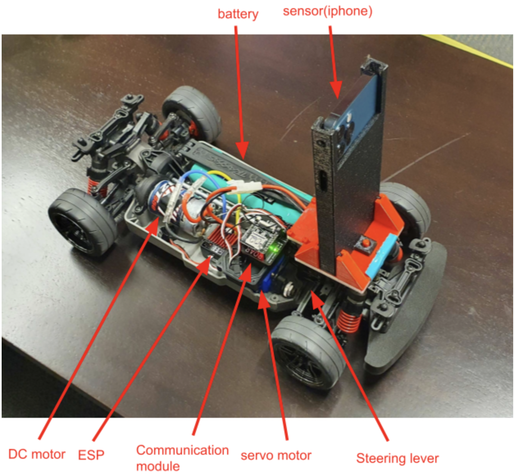
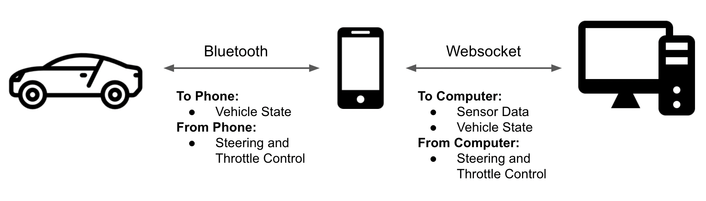
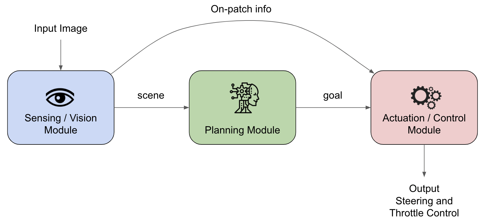

Design
There are 2 main sides to the design of our project: the hardware design and the software design.
Harware Design
Because we were working on the ROAR platform, the hardware side of the setup was, for the most part, done. The harware pipeline looks as follows:


We start with our RC Car. The car has, connected to its receiver, an Arduino that can communicate directly with the car (send turn and throttle signals). We then attach an iPhone onto the car, which is running an app. Through BLE (Bluetooth Low Energy) the app communicates with the Arduino to send and receive ar signals. Finally, the app is connected to the computer by UDP websocket. This way the computer can receive camera data and vehicle information from the phone, and send back controls that go through the phone, through the Arduino, to the car to control it.
Software Design
On the software side of things (the bulk of our work), our first task in creating the design for this problem was to modularize it, with the final pipeline looking like this:

We decided to break the project down into 3 big modules: Vision, Planning, and Control. This would enable us to have barriers of abstraction such that we could tinker with different techniques at each level without causing errors in the others.
Vision
The Vision Module is the first in line. It takes in as input the raw sensor data from the camera and vehicle. For our purposes, we were most interested in the RGB camera data of the rear facing camera. With a fairly straightforward goal, this module has 3 tasks:
- Identify where the lane is (in pixel coordinates on the [1280 x 720] image)
- Identify where the patches are (if any) (in pixel coordinates on the [1280 x 720] image)
- Identify if we are currently on a patch (and if so, which type) (as a string that is the type of patch we are on, or None if we are not on a patch)
Once these components have been identified, the vision module passes on the first to pieces of information to the planning module for the planning module to decide the next control. The third piece of information is sent directly to the control module, so that the control module can impose bounds on the controls to make the car behave as if though it is going over the patch it is on.
Planning
As mentioned above, the planning module takes in the (x, y) coordinates of the lane, and any patches that are within the viewing distance from the perception module. Based on this information, it decides what to do next: either continue following the line or deviate from the line either to pursue a patch group or to avoid an undesirable patch group. It then passes the desired target to the control module to execute the action.
As a contingency, the planning module also has a mode called “repeat previous error”, which serves to bring back the car into the track by assuming that the lane still exists on whichever side of the car it was last seen.
Control
Finally, we have the control module. This module takes in two inputs: the control command from the planning module and the "on-patch" information from the perception module. The control module then tells the car to do what the planning module told it to do, but under whatever constraints the "on-patch" information gives it. For example, if the car is going over an ice patch, the control module will not be able to send a throttle signal greater than the set amount for an ice patch for a short duration of time. This means even if the planning module dictates a faster throttle, it will be cutoff to the ice patch bound in the control module before getting sent to the car. This is an important point, because it highlights the independence of the part of our project that pursues/avoids patchs and the part of our project that changes the behavior based on patch coverage.